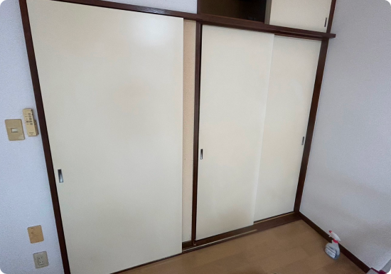
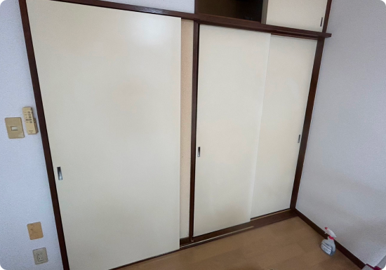
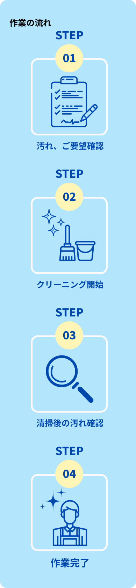
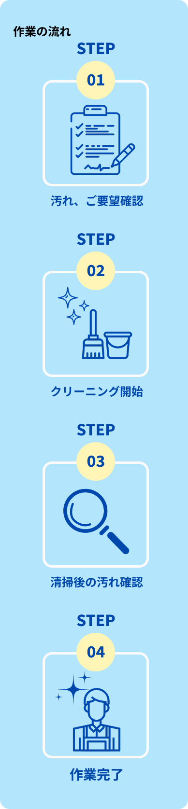

 


作業開始までの流れ

ご予約の前に
ご予約に関する注意事項
・お時間に余裕を持ちご予約ください。当日引き渡しの場合、汚れ具合やイレギュラー対応によりお時間がかかり、作業時間が伸びるケースがあり、期限に間に合わない可能性ある為。
・ご予約の日時が、当社の営業時間内であることをご確認ください。
・予約の日程候補は、なるべく日時をずらしてください。
・予約が集中し、ご希望の日時に伺えない場合がございます。その場合は、[メッセージ]にて改めて日時をお伺いします。
作業時に関するお願い
・作業の前後には必ずお立ち会いをお願いします。
・業務用洗剤を使用する為、作業中か別室待機のご協力をお願いします。
・空室クリーニングの場合は家具家電はないようにお願いします。もしある場合、家具家電を移動しての清掃や家具家電の清掃は基本料金対象外となります。希望の場合有料にて対応できますので事前にご相談下さい。（冷蔵庫、ベッド、棚電子レンジ等）
・空室クリーニングになるので、リフォーム中などの物が置いてある状態や部屋の照明がつかない段階の物件は受け付けておりません。(物の移動や、暗い状態での清掃は基本不可となります。)
・電気、水道、ガスをお借りします。
・作業前にお掃除箇所の確認をいたします。
・清掃箇所の荷物は事前に移動をお願いします。
・事前に伺った内容と著しく異なる場合は、追加料金が生じる可能性があります。
・取り外しができない箇所や故障している場合などは、部分的な作業のみになる場合や作業を承れない場合があります。
・専用の道具・洗剤を使用しますが、設備の劣化などにより塗装がはがれてしまう場合があります。
・研磨作業が必要なクリーニング作業の場合、設備に細かな傷がついてしまうことがあります。
・変質や染色などの汚れは、クリーニングでは完全に落とすことができない場合があります。
・10年以上経過している設備については保障できない場合があります。
※戸建の場合や、一定より広い平米の場合、追加費用がかかる場合があります。
よくあるご質問
A.
【1名作業の場合】 1R.1K.1DKは１日で終わります。 1LDK.2K.2DKは状態がよければ１日で終わる事もございます。 2LDK以上は２日もしくは予備日で３日間頂きます。
【2名作業の場合】 3LDKまでは、オプションがなければ一日でおわります。 オプションある場合は２日間頂きます。
A. 基本料金内で対応できる範囲を明確にしておりますが、以下の場合には追加料金が発生することがあります。
・予想以上の汚れがあり、通常の作業時間を超過する場合
・クリーニング対象範囲が事前の打ち合わせ内容と異なる場合
・特殊な洗浄が必要となる場合（例：カビ除去、頑固な水垢、油汚れ）
追加料金が発生する際は、必ず事前にお客様へご説明し、ご了承いただいた上で作業を進めますのでご安心ください。
A.付近の有料パーキングを使用しますが、その場合のパーキング代のご負担をお願いします。
A.損害保険に加入しております。
キャンセルポリシー